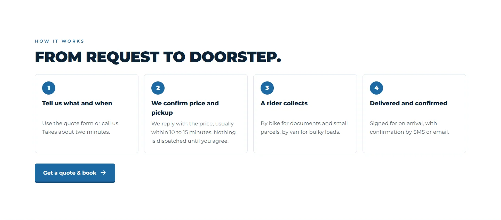

case study · courier company website
A website that brings in its own customers.
Live since October 2026
A full website for a Singapore courier company, designed and built solo. Days after launch it was the first source Google's AI answer pointed to for "document courier singapore". This page is about how I ran the build, so nothing went in before it was ready.
the problem
The plan lived in meetings, not on paper.
The requirements came out of client meetings, not a written spec. An AI coding agent will build whatever it's told, including features nobody has decided on yet. I needed a way to turn each meeting into a small, checked piece of work.
the result
What the client got.
A multi-page website, live since October 2026. A few days after launch it was the first source Google's AI answer pointed to for "document courier singapore".


Built so far
- Home, quote and booking, corporate accounts, 5 service pages, contact, privacy, terms and cookies.
- A table that matches what the customer needs to the right service.
- Real Google reviews, a client logo wall, a story timeline and an FAQ.
- A WhatsApp chat link and a sticky Call / Schedule a Pickup bar on phones.
Still in development
- Booking calendar with a weekly cap the server enforces (Monday to Sunday, Singapore time).
- Tracking link in order emails.
- Reminder email.
- "Track a delivery" link.
how I did it
Every change took the same path.
I designed and built the whole site myself, with Claude Code as my coding agent. I wrote every prompt, reviewed every build, and decided what was ready to go in.
- Client meetingThe client says what they want and reacts to the current version.
- TranscriptThe meeting transcript is the source for the next piece of work.
- One scoped promptOne prompt per piece of work, with checkpoints written into it.
- BuildThe agent builds up to the next checkpoint, then stops.
- ReviewI check the result before the next step starts.
- Scope from the meeting. Each prompt was written from a meeting transcript, so the work matched what the client actually asked for.
- Hold back what isn't ready. Features still in development stay listed as in development, never presented as finished.
- Checkpoints in every prompt. The agent stops at set points so I can review before it continues.
- Rules and history live in files. One file holds the build rules and a decision log keeps the history, so nothing depends on memory.
the honest limits
What isn't done yet.
- The booking calendar, tracking link, reminder email and "Track a delivery" link are still in development.
- Results are early. A few days after launch, the site was the first source Google's AI answer pointed to for "document courier singapore".
- The client isn't named here, so the screenshots leave out the site's header, logo and client logo wall.
your next step
Want something like this for your business?
Tell me what you need built and how you work today. On a free call I'll tell you whether I'm the right fit and what it would take.
Free 30-minute call. No pitch if it's not a fit.